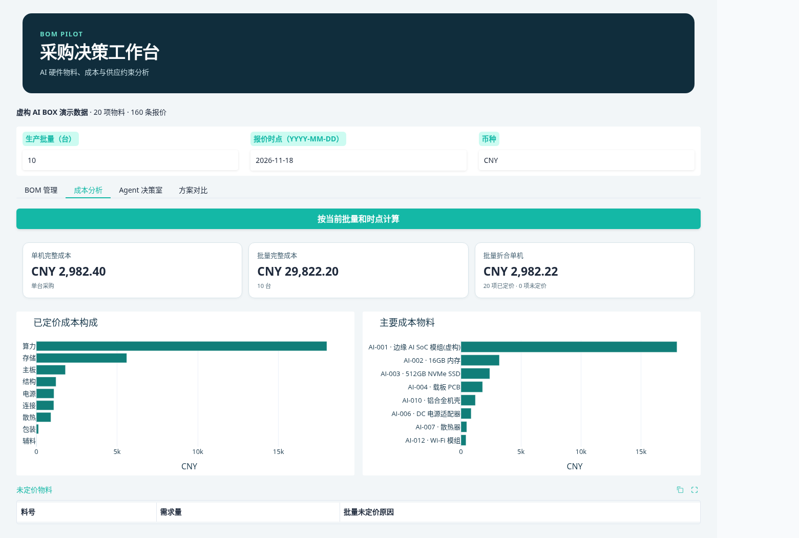

BOM-BOM队 · 虹桥国际科技周黑客松
从生产目标出发，交付可复算的采购建议。
检查报价与库存选择计算工具独立验收失败后调整或说明缺口
20 项 AI BOX 物料 · 160 条虚构报价
导入 XLSX / CSV 后，可查数据质量、成本构成和主要成本物料。

维持原分配 33,902.20调整后 30,434.20较涨价前仍高 2.05%
风扇需求 200 个分配由 80 增至 160已分配小计 268,099.20
现有报价最低 29,822.20超预算 2,385.776达到数量要求
成本、约束、UI 与部署
分配、验收、缺口、待审批
现阶段使用单层 BOM、单币种静态快照。已验证的历史模型执行可单独复核。
点击「Agent 决策室」的缺料场景